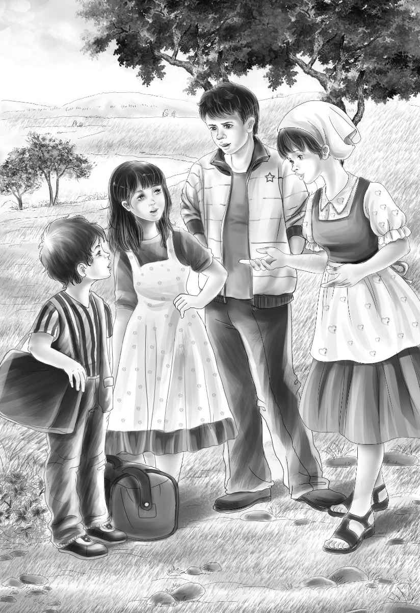

The four Alden children could hardly wait to get back to Mystery Ranch. Henry,Jessie,Violet and Benny had planned for weeks what they would do.
"We'll go on that dear old train!" said Violet. "Remember Mr. Carter who helped us carry our bags,Jessie?"
"I'll carry the bags!" shouted Benny. "Mr. Carter won't be on the train this time. "
"Maybe I'll carry some of the bags,old boy," said Henry. "But you know we won't get off at Centerville. "
Jessie nodded at her older brother. "Yes,we will get off at Yellow Sands now. I think that is a beautiful name. Our uranium fields looked just like yellow sand. "

Grandfather said,"Sam will meet you. Maybe Sam will carry the bags. "
The children laughed. "Fighting over old bags," said Benny.
"Too bad Watch has to ride in the baggage car," said Henry. "But they don't allow dogs anywhere else on the train. "
"I'll ride in the baggage car,too," said Benny. "Then he won't mind. "
Mr. Alden laughed. He said,"I'm afraid you can't do that. But you can go and see him once in a while. Then he will know you are near by. "
At last the day came when they were off to Mystery Ranch where Aunt Jane lived.
Henry,Jessie,Violet and Benny loved Aunt Jane and they were to visit her for the summer vacation.
Once she had been a very cross old woman. But now she was a very pleasant lady.
When they got off the train at Yellow Sands,they all looked for the old black horse. But instead they saw Sam and Maggie with a station wagon. Sam took care of the ranch,and Maggie took care of Aunt Jane.
"Hello,Sam!" cried Benny. "Where's Snowball?"
"Snowball's all right," said Sam smiling. "I always thought that was a funny name for a black horse. "
"I named him," said Benny. "I thought it was a funny name,too. Where is he?"
"He is taking it easy these days," said Maggie. "He stays out in the field all the time eating grass. This car goes faster. "
"You mean you can drive it,Maggie?"asked Jessie.
"Yes," said Maggie smiling. "Sam says I drive all right. "
"Let's go," said Sam. "Now that Watch is out of the baggage car,we are ready. "
Everyone carried a bag. In no time they were going through the new gate to Aunt Jane's house. At the top of the gate were big letters saying,Mystery Ranch.
How glad Aunt Jane was to see them! Watch did not care much for Aunt Jane's new dog,Lady. But when lunch was ready,Watch lay down at Jessie's foot,and Lady lay down at Aunt Jane's foot. So all was well.
"Oh,this place has changed in just this one year," Aunt Jane said. "You would never know it. There is one long street down the middle of my old hay field. "
"Is it a real street?" asked Benny.
"Oh,my,yes! There are lots of stores and a church,and a school and a High School. "
"I can't imagine it," said Henry. "We shall have to go and see it soon. "
"Go any time you like," said Aunt Jane. "I know you are just dying to see that street. "
"We want to see you,too,Aunt Jane," said Violet.
"Well,you've seen me now," said Aunt Jane. "Lunch is over. So you go along and enjoy yourselves. "
"Be back for supper," said Maggie. "We are going to have a fine supper. "
"Oh,we will get back long before supper," said Jessie. "We just want to see what the old ranch looks like. "